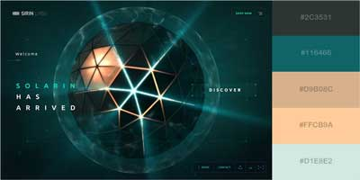

Color Scheme
A powerful tool for designing a website is the use of color.
A professional looking color palette is essential for online success.
Careful planning with the use of color in a website will attract potential customers.
It will provide a polished look, stir emotion, and earn the trust of visitors.
Website visitors will connect the colors with quality service.
Visitors will be pleased with the look of the site and feel confident in the quality of the hotels.
Future customers will be instilled with a sense of trust for the Temple Inn & Suites.
The website will generate repeat business due to the connection established with a sophisticated color scheme.
Here is the color theme for the Temple Inn & Suites hotel chain:
- #2C3531
- #116466
- #D9B08C
- #FFCB9A
- #D1E8E2
References: https://visme.co/blog/website-color-schemes/
Website Colors
The color palette for the Temple Inn & Suites website gives a professional and futuristic look.
Visitors who will come to this site will feel confident in trusting the quality of our hotel services.
The combination of sophisticated colors with soft colors are appealing to the human eye.
This blend of platinum, gunmetal gray, and blue sapphire with tan and peach colors showcase a sleek and modern color scheme.
It will entice potential customers to explore the website and book a reservation.
Color is one of the most important design tools for a website.
An eye-catching color scheme will attract new customers.
The combination of bold and soft colors demonstrates a high-quality website and is pleasing to the eye.
This color palette will send a strong message of professionalism.
Website visitors will take notice and trust the Temple Inn & Suites to provide quality care for themselvesw and their family.
Warm colors such as orange, red and yellow exude a sense comfort and warmth.
These colors brighten the mood and can instill feelings of happiness and joy.
Cool colors such as green, purple, and blue stir up emotions of cold weather.
These colors bring a sophisticated and corporate look, establishing feelings of trust and authority.
Neutral colors like tan, gray, and brown are unemotional, because they are neither cold nor hot.
Utilizing the power of color and the emotions they instill, relays important messages without the use of words.
This color scheme will send visual messages which will attract the target audience.
Reference: https://www.webfx.com/blog/web-design/a-look-into-color-theory-in-web-design/